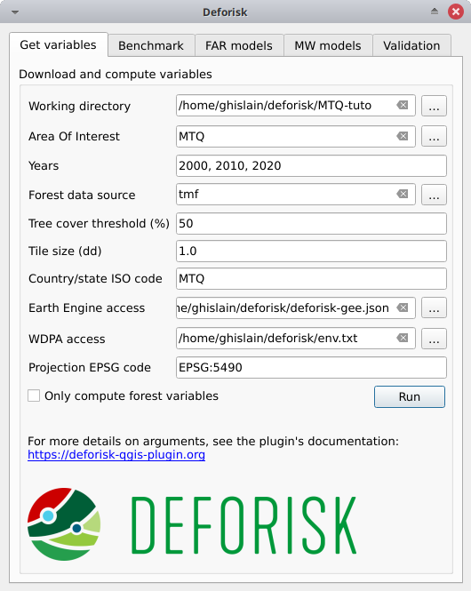
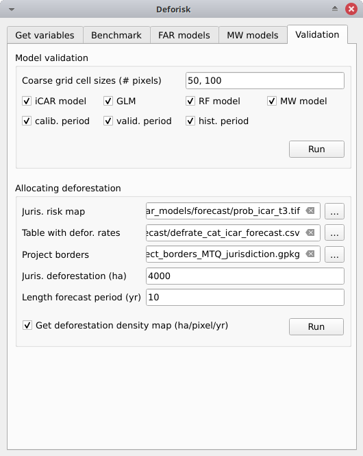

Get started#
Introduction#
Open QGIS on your computer. To have access to log messages, activate the “Log Messages” panel in QGIS going to View > Panel > Log Messages in the Menu. When using a plugin, it is also a good habit to open the Python console in QGIS to have access to Python messages returned in the console. To open it, click on the Python icon  in the “Plugins Toolbar”. If the toolbar is not visible, activate it going to
in the “Plugins Toolbar”. If the toolbar is not visible, activate it going to View > Toolbars > Plugins Toolbar in the Menu.
Once the plugin has been installed (see Installation instructions), open the plugin clicking on its icon . You should see the versions of the dependencies installed in your environment written in the Python console. Check that these version numbers correspond to the last version for each dependency. Otherwise upgrade the dependencies.
osmconvert 0.8.10
osmfilter 1.4.4
geefcc 0.1.3
pywdpa 0.1.6
forestatrisk 1.2
riskmapjnr 1.3
To test the plugin and have a first look at its functionalities, try it on a small area of interest (AOI) such as the Martinique island (1128 km2) which has the MTQ iso code. Testing the plugin on a small AOI has the advantage of making computations fast so that you can directly see the outputs, interpret the results, and understand the functioning of the plugin.
To better understand the different steps, keep in mind that we are considering different periods and dates for model calibration and validation.

Dates and periods used to calibrate and validate models. Modified from Verra’s VT0007. In our case, we renamed the period from t2 to t3 as the “validation” period in place of the “confirmation” period.#
Get variables#
Working directory: Select your working directory. Here/home/<username>/deforisk/MTQ-tuto, but it could beC:\Users\<username>\deforisk\MTQ-tutoon Windows for example.Area Of Interest: MTQYears: 2000, 2010, 2020Forest data source: tmfTree cover threshold (%): 50 (could be left empty, not useful here for tmf data source)Tile size (dd): 1Country/state ISO code: MTQEarth Engine access: Google Cloud project name with Earth Engine access or path to a JSON private key file for service account.WDPA access: Personal WDPA API Token or path to text file with WDPA_KEY environmental variable.Projection EPSG code: EPSG:5490Only compute forest variables: unchecked, data will be downloaded from global data-sets (SRTM, WDPA, OSM) and explanatory variables other than forest related variables will be computed.
Warning
For Windows users, choose a working directory with a short path (e.g. C:\Users\<username>\<dirname>). Long file paths can cause problems to access files on Windows.
Click the run button. A forest cover change map appears in the list of QGIS layers (see image below and click to enlarge) and a plot of the forest cover change fcc123.png is created in folder outputs/variables. New folders are created in the working directory among which the data_raw folder which includes raw data with intermediary files and the data folder which includes processed data used for models and plots. You can visualize the road network for example adding the roads_proj.shp vector file, which is located in the data_raw directory, in QGIS.
{kind=link}
If you want to skip this step, you can download a zip file including all the data for the MTQ example.
Benchmark model#

Fit model to data#
Deforestation threshold (%): 99.5Max. distance to forest edge (m): 2500calib. period: Checked, the model is fitted over the calibration period (t1–t2).hist. period: Checked, the model is fitted over the historical period (t1–t3).
Click the Run button to estimate the deforestation risk with the benchmark model and predict the deforestation risk at t1 using data on both the calibration and historical periods. Maps with classes of deforestation risk are added to the list of QGIS layers (see image below).

New folders with results are created in the outputs/rmj_benchmark/ directory for each period. In particular, the output folders include the <period>/perc_dist.png file. This file shows the plot of the cumulated deforestation as a function of the distance to forest edge and indicates the distance threshold (here 240 m for the calibration period).

Distance threshold for the calibration period.#
The output folders also include the <period>/defrate_cat_bm_<period>.csv table which shows the deforestation rates for each class of deforestation risk (see details here).
cat |
nfor |
ndefor |
rate_obs |
rate_mod |
rate_abs |
time_interval |
pixel_area |
defor_dens |
|---|---|---|---|---|---|---|---|---|
1001 |
33433 |
0 |
0.0 |
0.0 |
0.0 |
10 |
0.09 |
0.0 |
1002 |
12965 |
0 |
0.0 |
0.0 |
0.0 |
10 |
0.09 |
0.0 |
1003 |
91686 |
19 |
2.072e-05 |
2.072e-04 |
2.072e-04 |
10 |
0.09 |
1.865e-06 |
1004 |
82279 |
5 |
6.077e-06 |
6.076e-05 |
6.076e-05 |
10 |
0.09 |
5.469e-07 |
2001 |
1373 |
0 |
0.0 |
0.0 |
0.0 |
10 |
0.09 |
0.0 |
Predict the deforestation risk#
t2 validation: Checked, computes predictions at t2 for validation (using the benchmark model fitted over the calibration period).t3 forecast: Checked, computes predictions at t3 for forecasting (using the benchmark model fitted over the historical period).
Click the Run button to predict the deforestation risk at t2 and t3 using the benchmark model. Maps with classes of deforestation risk are added to the list of QGIS layers and new files are added to the output folders.
Forestatrisk models#
Sample observations#
N# samples: 10000Adapt sampling: Checked, the number of observations is proportional to forest area.Random seed: 1234Spatial cell size (km): 2calib. period: Checked, the observations are sampled for the calibration period (t1–t2).hist. period: Checked, the observations are sampled for the historical period (t1–t3).
Warning
For large jurisdictions, to avoid computing to many parameters for spatial random effects, set the spatial cell size at ~10km.
Pushing the Run button in this box will sample the observations. When the operation is finished, the sampled observations appear in the list of QGIS layers.
{kind=link}
New folders with results are created in the outputs/far_models/ directory including the <period>/sample.txt file which is the observation dataset with variable values.
altitude |
dist_edge |
dist_river |
dist_road |
dist_town |
fcc |
pa |
slope |
X |
Y |
cell |
|---|---|---|---|---|---|---|---|---|---|---|
56 |
30 |
750 |
0 |
150 |
0 |
1 |
6 |
700155 |
1645545 |
63 |
56 |
30 |
750 |
0 |
150 |
0 |
1 |
6 |
700185 |
1645545 |
63 |
100 |
30 |
875 |
0 |
1657 |
0 |
1 |
5 |
698265 |
1645425 |
62 |
93 |
30 |
600 |
0 |
1358 |
0 |
1 |
8 |
698565 |
1645425 |
62 |
68 |
30 |
300 |
0 |
335 |
0 |
1 |
7 |
699615 |
1645425 |
63 |
Fit model to data#
List of variables: Leave empty, it will use the default formula:C(pa) + altitude + slope + dist_edge + dist_road + dist_river + dist_town.Starting values for betas: -99Prior Vrho: -1MCMC: 100Variable selection: Leave unchecked, no variable selection (make computations faster for this example).calib. period: Checked, models are fitted over the calibration period (t1–t2).hist. period: Checked, models are fitted over the historical period (t1–t3).
Pushing the Run button in this box will fit the statistical model to the deforestation observations. Three statistical models are fitted (iCAR model, GLM, and Random Forest model). New files are added to the outputs/far_models/calibration and outputs/far_models/historical folders. In particular, the summary_icar.txt file is the summary of the iCAR model with mean, standard-deviation, and credible intervals for model parameters.
Mean |
Std |
CI_low |
CI_high |
|
|---|---|---|---|---|
Intercept |
-3.39 |
0.158 |
-3.7 |
-3.1 |
C(pa)[T.1.0] |
-0.0915 |
0.122 |
-0.282 |
0.172 |
scale(dist_edge) |
-10.3 |
0.417 |
-11.1 |
-9.63 |
scale(dist_road) |
-0.256 |
0.0537 |
-0.36 |
-0.144 |
scale(dist_town) |
0.0342 |
0.0464 |
-0.0551 |
0.123 |
scale(dist_river) |
-0.0817 |
0.0544 |
-0.188 |
0.0199 |
scale(altitude) |
-0.554 |
0.0809 |
-0.728 |
-0.4 |
scale(slope) |
-0.532 |
0.0392 |
-0.611 |
-0.457 |
Vrho |
6.89 |
0.756 |
5.64 |
8.49 |
Deviance |
1.36e+04 |
24.9 |
1.36e+04 |
1.37e+04 |
The model_deviances.csv file include a table for comparing percent of deviance explained between models.
model |
deviance |
perc |
|---|---|---|
null |
26769.0 |
0.0 |
glm |
16864.0 |
37.0 |
rf |
6668.0 |
75.0 |
icar |
13636.0 |
49.0 |
full |
0.0 |
100.0 |
Predict the deforestation risk#
Spatial cell size interpolation (km): 0.1.iCAR model: Checked, computes predictions with the iCAR model.GLM: Checked, computes predictions with GLM.RF model: Checked, computes predictions with the Random Forest model.t1 calibration: Checked, computes predictions at t1 using models fitted over the calibration period.t2 validation: Checked, computes predictions at t2 for validation (using models fitted over the calibration period).t1 historical: Checked, computes predictions at t1 using models fitted over the historical period.t3 forecast: Checked, computes predictions at t3 for forecasting (using models fitted over the historical period).
Warning
For large jurisdictions, to avoid obtaining a large raster file (of type Float), set interpolation of spatial random effects at ~1km.
Pushing the Run button in this box will use the statistical models for predictions. When the operation is finished, rasters representing the classes of deforestation risk appear in the list of QGIS layers. New folders are created outputs/far_models/validation and outputs/far_models/forecast. They include the <period>/defrate_cat_<model>_<period>.csv tables with deforestation rates for each class of deforestation risk (see details here).

Moving window models#
Fit model to data#
Deforestation threshold (%): 99.5%Max. distance to forest edge (m): 2500Window sizes (# pixels): 11, 21calib. period: Checked, the model is fitted over the calibration period (t1–t2).hist. period: Checked, the model is fitted over the historical period (t1–t3).
Note
For large jurisdictions, if you want to reduce computation time, use only one moving window size (e.g. 21 pixels).
Click the Run button to estimate the deforestation risk with the moving window model using data on both the calibration and historical periods. New folders with results are created in the outputs/rmj_moving_window/ directory including the <period>/ldefrate_mw_<window_size>.tif raster file with local deforestation rates rescaled on [2, 65535].
Predict the deforestation risk#
t2 validation: Checked, computes predictions at t2 for validation (using the moving window model fitted over the calibration period).t3 forecast: Checked, computes predictions at t3 for forecasting (using the moving window model fitted over the historical period).
Click the Run button to predict the deforestation risk at t2 and t3 using the moving window model. Maps with classes of deforestation risk are added to the list of QGIS layers (see image below) and new folders with results are created in the outputs/rmj_moving_window/ directory, including the <period>/defrate_cat_mv_<window_size>_<period>.csv tables with deforestation rates for each class of deforestation risk (see details here).
{kind=link}
Validation#
Coarse grid cell size (# pixels): 50, 100iCAR model: Checked, estimates the performance of the iCAR model.GLM: Checked, estimates the performance of the GLM.RF model: Checked, estimates the performance of the Random Forest model.MW model: Checked, estimates the performance of the Moving Window models.calib. period: Checked, estimates model performances for the calibration period (t1–t2).valid. period: Checked, estimates model performances for the validation period (t2–t3).hist. period: Checked, estimates model performances for the historical period (t1–t3).
Note
For large jurisdictions, if you want to reduce computation time, use only one cell size (e.g. 100 pixels) and check only the validation period, the only one with independent observations.
Pushing the Run button in this box will compute the predicted deforested area in each grid cell for each model and each period selected and compare this value to the observed deforested area for the same grid cell and period.
New folders are created for each period: outputs/model_validation/<period>/figures and outputs/model_validation/<period>/tables. Several output files are added to each folder.
Files figures/pred_obs_<model>_<period>_<cell_size>.png which show the plot of predicted vs. observed deforested area. The plot shows values of predicted and observed deforested area in each grid cell as points and the one-one line. The plot reports also the number of grid cells (or points), and the values of two of the performance indices: the \(R^{2}\) and the MedAE.

File outputs/model_validation/indices_all.csv includes a table with the performance indices for all validation cell sizes, all models, and all periods. In this example, both the Random Forest model and the iCAR model are better than the benchmark model whatever the performance indices considered. The iCAR model is the best model has it has the lowest MedAE, the lowest RMSE, and the highest \(R^{2}\) for the validation period which is the only period with independent data (i.e. which have not be used to calibrate the models). This is true whatever the validation cell size chosen.
csize_coarse_grid |
csize_coarse_grid_ha |
ncell |
period |
model |
MedAE |
R2 |
RMSE |
wRMSE |
|---|---|---|---|---|---|---|---|---|
50 |
225.0 |
604 |
validation |
bm |
2.71 |
0.43 |
6.08 |
6.22 |
50 |
225.0 |
604 |
validation |
icar |
1.78 |
0.65 |
4.79 |
4.59 |
50 |
225.0 |
604 |
validation |
glm |
2.39 |
0.38 |
6.39 |
6.52 |
50 |
225.0 |
604 |
validation |
rf |
2.09 |
0.50 |
5.69 |
5.74 |
50 |
225.0 |
604 |
validation |
mw_11 |
2.34 |
0.56 |
7.66 |
6.83 |
50 |
225.0 |
604 |
validation |
mw_21 |
2.51 |
0.56 |
7.54 |
6.66 |
Allocating deforestation#
The deforestation risk map obtained with the iCAR model at t3 can be used to allocate deforestation after year 2020. Both the risk map with classes of deforestation from 1 to 65535 and the defrate_cat_icar_forecast.csv table with deforestation rates for all classes of deforestation risk are necessary to allocate deforestation in the future.
The table only includes values for rate_mod, the relative spatial deforestation rates from the iCAR model estimated on the historical period. As for the validation step, the deforestation must be adjusted for quantity depending on the amount of deforestation expected in the future.
cat |
nfor |
ndefor |
rate_obs |
rate_mod |
rate_abs |
time_interval |
pixel_area |
defor_dens |
|---|---|---|---|---|---|---|---|---|
1 |
137575 |
0 |
0.0 |
1e-06 |
0.0 |
20 |
0.09 |
0.0 |
2 |
5425 |
0 |
0.0 |
1.6259239478743857e-05 |
0.0 |
20 |
0.09 |
0.0 |
3 |
3523 |
0 |
0.0 |
3.151847895748772e-05 |
0.0 |
20 |
0.09 |
0.0 |
4 |
2458 |
0 |
0.0 |
4.677771843623157e-05 |
0.0 |
20 |
0.09 |
0.0 |
5 |
2078 |
0 |
0.0 |
6.203695791497542e-05 |
0.0 |
20 |
0.09 |
0.0 |
Considering a total deforestation \(D\) (in ha) for the next \(Y\) years at the jurisdictional level, the adjustment factor is \(\rho = D / (A \sum_i n_{i} \theta_{m,i})\), with \(A\) the pixel area in ha, the absolute rate is \(\theta_{a,i} = \rho \theta_{m,i}\), and the deforestation density is \(\delta_{i} = \theta_{a,i} \times A / Y\). The deforestation density \(\delta_{i}\) is used to predict the amount of deforestation (in ha/yr) for each forest pixel belonging to a given class of deforestation risk for the next \(Y\) years (for notations, see details here).
The risk map together with the table of computed deforestation density can be used to proportionally allocate fractions of either the jurisdictional unplanned deforestation activity data baseline (in the context of VMD0055) or the jurisdictional FREL (in the context of the VCS Jurisdictional and Nested REDD+ Framework) to projects or programs to be implemented within the jurisdiction. To do so, a table with the number of pixels for each class of deforestation risk in the project area must be computed.

Allocating deforestation to projects within the jurisdiction.#
The deforisk QGIS plugin includes an utility to facilitate the allocation of the deforestation to projects. Before using it, you can download the vector file defining the borders of a fake project in Martinique (project_borders_MTQ_jurisdiction.gpkg).
Juris. risk map: Fileprob_icar_t3.tiffor the best risk map.Table. with defor. rates: Filedefrate_cat_icar_forecast.csvfor the table with the deforestation rates from the icar model at t3 for each class of deforestation risk.Project borders: Fileproject_borders_MTQ_jurisdiction.gpkg.Juris. deforestation (ha): 4000. About 400 ha have been deforested each year in 2010–2020 in Martinique.Length forecast period (yr): 10.Get deforestation density map (ha/pixel/yr): checked.
Pushing the Run button in this box computes the quantity adjustment factor and the deforestation density for each class of risk using the total expected deforestation at the jurisdictional level (\(D=4000\))and the relative spatial deforestation rates from the model. Then, the risk map with classes of deforestation risk is cropped to project borders and the number of forest pixels in each class of risk is computed at the project level. The expected deforestation at the project level is obtained summing the deforestation densities within the project. A raster file with the deforestation density for each forest pixel is also produced.
A folder outputs/allocating_deforestation is created with the file defor_project.csv indicating the predicted deforestation (106.7 ha) for the period 2020–2030 for the project:
period |
length (yr) |
deforestation (ha) |
|---|---|---|
annual |
1.0 |
10.7 |
entire |
10.0 |
106.9 |